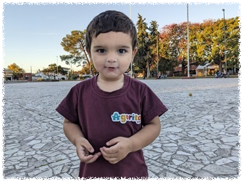

ウルグアイ

| Facebookページへは各 |  |
から飛べます |
【ウルグアイ1】ブエノスアイレスへ着くなり国際フェリーでウルグアイへと向かいます。行き先は世界遺産のまち、コロニア・デル・サクラメント。フォトジェニックなシーンに満ちた素敵なところです。
Akira Mizuiさんの投稿 2025年4月27日日曜日
【ウルグアイ2】モンテビデオにやってきました。日曜はあらゆる店が閉まっており食事にも難儀しましたが、ゴーストタウンと化した旧市街では人々の生活の息吹が感じられ、長居してもいいと思わせる珍しい首都でした。
Akira Mizuiさんの投稿 2025年4月28日月曜日
【ウルグアイ3】ウルグアイに行くと決めた時からどうしても行きたかったリベラ、ブラジル国境に位置し互いの国を自由に行き来できるボーダーレスのまち。一歩踏み出せば言葉も通貨も街並みも変わるという面白さを体感してきました。
Akira Mizuiさんの投稿 2025年4月29日火曜日
【ウルグアイ4】少し南のまちタクアレンボへ移動します。リベラ−タクアレンボ間にはこの国で唯一の旅客鉄道が運行されているのですが週2便しかなくスケジュールが合わなかったためバスを使いました。
Akira Mizuiさんの投稿 2025年5月1日木曜日